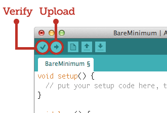
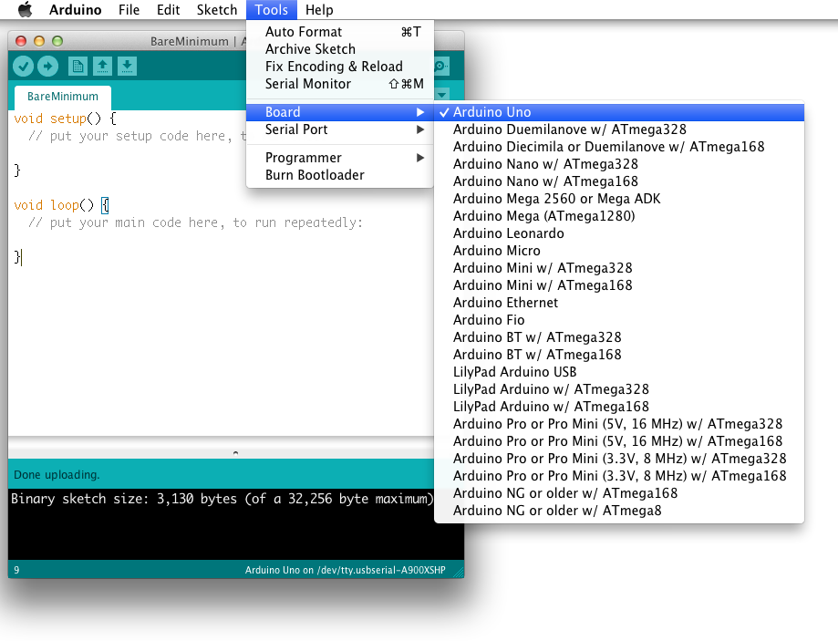

Download & install the Arduino IDE.
Download
If you haven't already, go to the Download section of the arduino.cc website.
Download the latest version (which, at the time of this writing, is version 1.0.3).
Install
When you have downloaded this file, go to the Getting Started section of the arduino.cc website.
Follow the tutorial for your specific platform (Windows, Mac, or Linux) to install the software, install any USB drivers (especially on Windows), and uploading the "Blink" sketch to make sure everything is working.
Arduino buttons
Note that Arduino's screenshots are out of date and the buttons look like this now:

The two most important buttons on Arduino are in the upper lefthand corner.
Verify: Makes sure that there are no errors in your code.
Upload: Compiles your sketch and writes the program to your microcontroller's memory.
Select Arduino Uno as the Board
Remember to select the Arduino Uno option from the Tools » Board drop down menu.

Re-iterating the Windows USB driver installation steps
- Plug in your Arduino to your Windows computer
- Launch Windows Device Manager (I usually click Start menu then start typing "Device Manager" and find it in the filtered list.)
- Double click on Arduino Uno (under Other Devices)
- While you're here, note the COM port used
- Click on Update Driver
- Click Browse my computer for driver software
- Choose Let me pick from a list of device drivers on my computer
- Resist the urge to use the search option!
- Keep default "Show All Devices option selected and click Next
- Click Have Disk
- Point it to where the Arduino drivers folder is (e.g. \drivers) and click OK.
- Select Arduino Uno and click Next
- Click Yes and ignore signature warning.
- Note the COM port assigned to the USB (e.g. COM6 for me)
Re-terating the Serial Port setting
On Windows:
- Use the COM port you noted while installing the drivers to set the Tools » Serial Port drop down menu. If you've forgotten or even plugged the Arduino into a new USB port on your computer, launch Windows Device Manager (I usually click Start menu then start typing "Device Manager" and find it in the filtered list.)
On Mac:
- If your Mac can see the Arduino, it'll show up as something like /dev/tty.usbmodemXXXX to set the Tools » Serial Port drop down menu.
Re-terating installation of the FTDI drivers
Go to http://www.ftdichip.com/Drivers/VCP.htm to get the lastest FTDI drivers if you're still having trouble with your computer seeing the Arduino.
On Windows:
- To confirm if you're 32- or 64-bit, right-click on My Computer.
On Mac:
- If you're on any Mac that's less than 3 years old, you're most likely 64-bit. 2.2.18 is the latest FTDI driver for you.